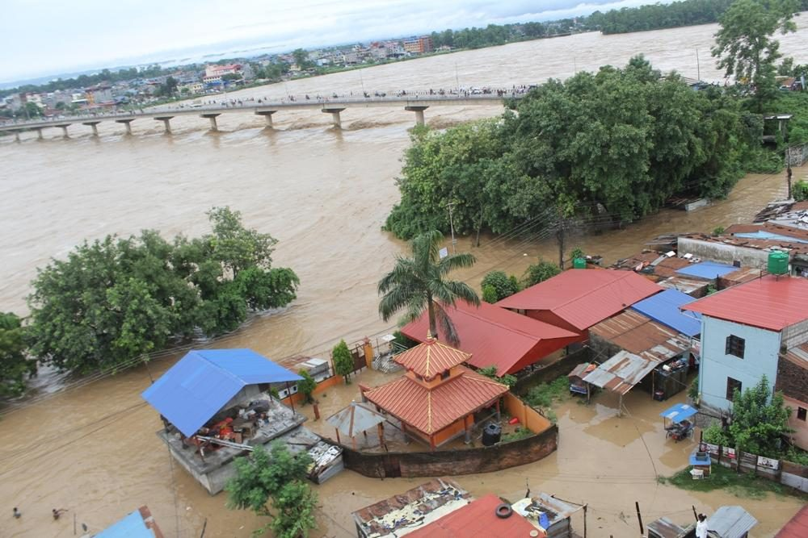

नेपालमा बाढीपहिरोको कहर: २१ जनाको मृत्यु, सयौँ परिवार विस्थापित
संक्षिप्त सारांश: नेपालका विभिन्न जिल्लामा अविरल वर्षापछि आएको बाढीपहिरोमा परी कम्तीमा २१ जनाको मृत्यु, पाँच जना बेपत्ता र पाँच जना घाइते भएका छन्। हजारौँलाई सुरक्षित स्थानमा सारिएको छ भने बाढीले बस्ती, सडक र घरहरूमा ठूलो क्षति पुर्याएको छ।

काठमाडौं। अविरल वर्षापछि आएको बाढी र पहिरोले नेपालका विभिन्न जिल्लामा ठूलो जनधनको क्षति पुर्याएको छ। राष्ट्रिय विपद् जोखिम न्यूनीकरण तथा व्यवस्थापन प्राधिकरणका अनुसार सेप्टेम्बर २४ देखि २७ सम्मको वर्षाजन्य विपद्मा कम्तीमा २१ जनाको मृत्यु भएको छ भने पाँच जना बेपत्ता र पाँच जना घाइते भएका छन्।
नारायणी, तिनाउ, सप्तकोशी लगायतका नदीमा पानीको सतह बढ्दा बस्तीहरू डुबानमा परेका छन्। रूपन्देहीको बुटवलमा तिनाउ नदीको बाढीले छ घर बगाएको छ भने जोखिममा रहेका बस्तीबाट करिब १,००० जनालाई सुरक्षित स्थानमा सारिएको छ।
नवलपरासी पश्चिम र सप्तरीमा नदीको बाढीले सयौँ घर डुबानमा परेका छन्। देशभर ७४७ परिवार प्रत्यक्ष प्रभावित भएका छन् भने करिब २,००० जनालाई जोखिमयुक्त क्षेत्रबाट सुरक्षित स्थानमा सारिएको छ।
बाढीपहिरोका कारण नारायणगढ–मुग्लिन, पृथ्वी राजमार्गलगायत विभिन्न सडकखण्डमा यातायात प्रभावित भएको छ। म्याग्दी, बागलुङ र जाजरकोटलगायतका क्षेत्रमा उद्धारका लागि हेलिकप्टरसमेत परिचालन गरिएको छ।
प्राधिकरणका अनुसार देशभर १४३ घर पूर्ण रूपमा नष्ट भएका छन् भने ५१ घरमा आंशिक क्षति पुगेको छ। वर्षा रोकिए पनि नदीको बहाव र पहिरोको जोखिम कायमै रहेकाले सतर्कता अपनाउन आग्रह गरिएको छ।
विपद्को यस घडीमा प्रभावित परिवारप्रति हार्दिक समवेदना। जोखिमयुक्त क्षेत्रमा रहनुभएका सबैले सतर्कता अपनाऔँ र आधिकारिक सूचनालाई पछ्याऔँ।
City Vision TV | समाचार
#नेपालबाढी #बाढीपहिरो #NepalFloods #NepalNews #CityVisionTV